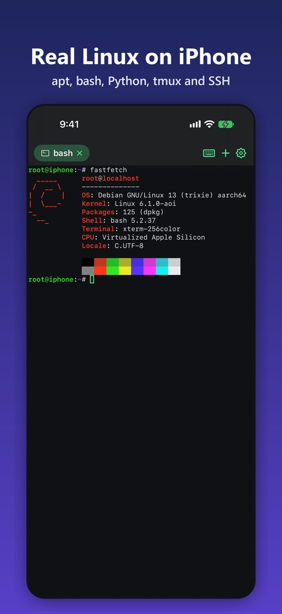
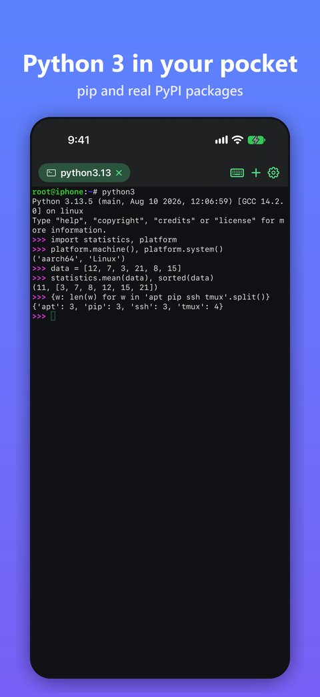
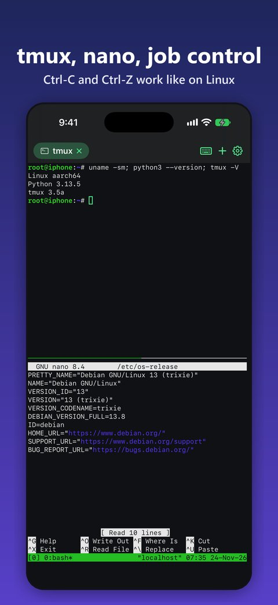
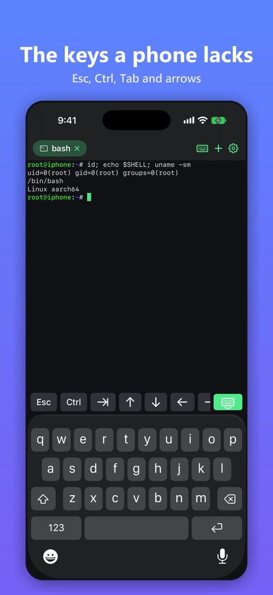
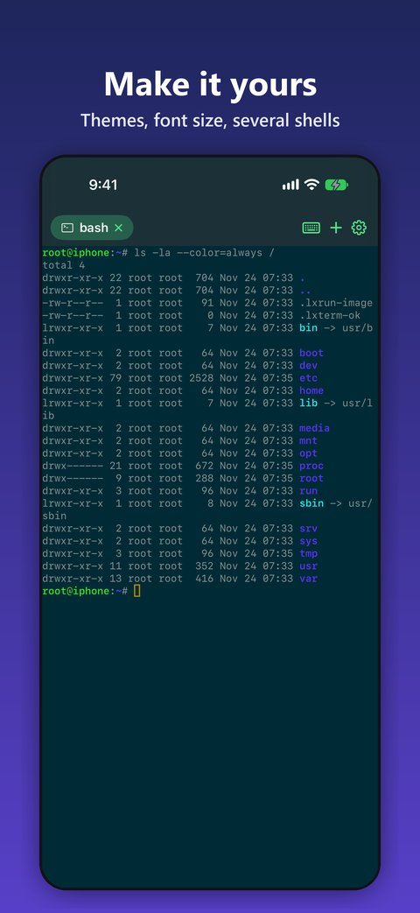
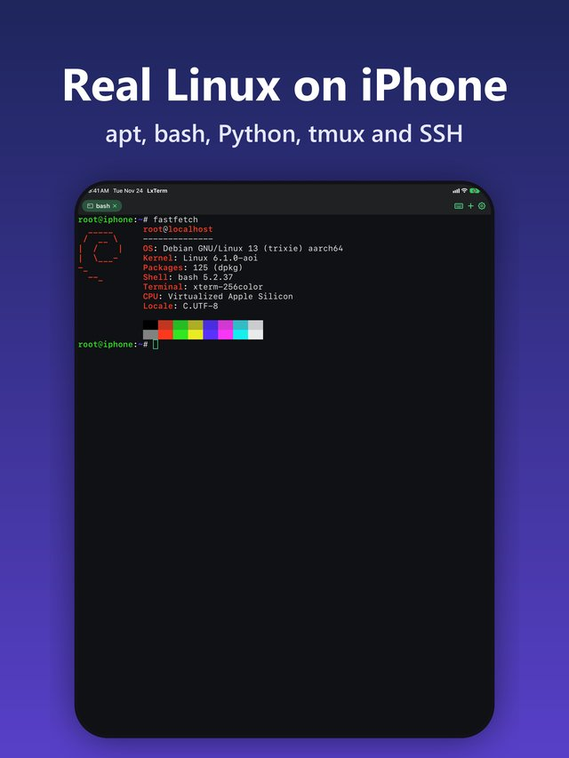
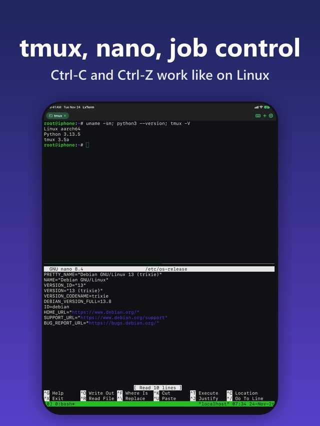
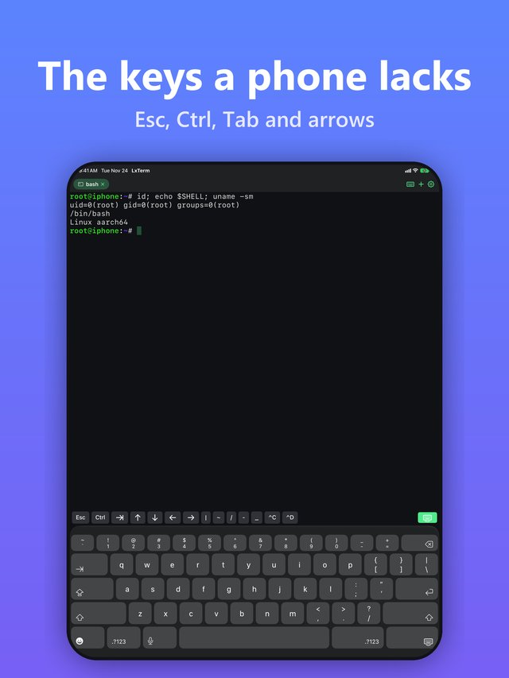

Run real Linux on your iPhone
LxTerm runs Debian 13 for arm64 on a normal, non-jailbroken iPhone and iPad: install software with apt, run Python with pip, keep sessions in tmux and connect over SSH. Offline, private, free and open source.





A real Linux system, not a set of ported commands
On iPad



How it works
iOS does not let apps generate machine code, so LxTerm brings its own AArch64 interpreter and a Linux system-call layer: real fork and execve, pipes, signals, job control and a terminal with Linux's line discipline. Debian's binaries run inside it as they would on an arm64 machine. Heavy number crunching is slower than on a computer; everyday command-line work, scripting and learning Linux feel at home. The code is open source on GitHub.
Questions
Can I run Linux on an iPhone without a jailbreak?
Yes. Install LxTerm from the App Store and open it: Debian 13 for arm64 starts on the phone itself in a few seconds, with no jailbreak, no sideloading and no remote server.
How do I use apt on my iPhone?
Open LxTerm and type apt update, then apt install followed by a package name, for example apt install htop. Packages come from Debian's own mirrors.
Can I run Python and pip on iPhone?
Yes. Python 3 is installed; add pip with apt install python3-pip and install packages from PyPI, including compiled ones such as polars, because LxTerm runs real Linux arm64 binaries.
Does LxTerm have SSH and tmux?
Yes. tmux is installed, and OpenSSH is one apt install away (apt install openssh-client). Ctrl-C, Ctrl-Z and job control work as on Linux.
How is LxTerm different from iSH and a-Shell?
iSH emulates a 32-bit x86 PC running Alpine; a-Shell offers commands ported to iOS. LxTerm runs Debian's own 64-bit ARM programs unmodified, with apt and Debian's whole package archive.
Is it fast?
Programs run in an interpreter, because iOS allows no JIT. Shell work, scripts, editors, git and Python are comfortable; heavy computing such as large compiles is slower than on a computer.
Is LxTerm free?
Yes, free with no ads or purchases, and open source under the GPL-3.0.